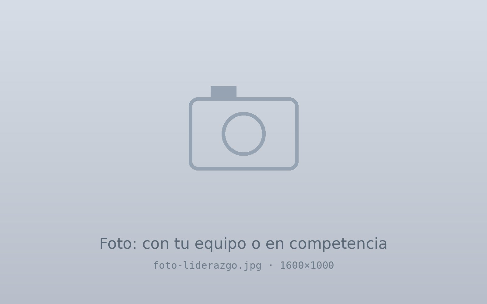

LeadershipLiderazgo
Leading teams, from the lab to the finish lineLiderar equipos, del laboratorio a la meta
I have led every project team I have been part of at university, and endurance sport taught me the discipline to see long efforts through.He liderado todos los equipos de proyecto en los que he participado en la universidad, y el deporte de resistencia me enseñó la disciplina para sostener esfuerzos largos.

Project teams I have ledEquipos de proyecto que he liderado
Nine university projects, from four-person teams to an eleven-person team working with Schneider Electric. In each one I coordinated the work and also took part in every subsystem.Nueve proyectos universitarios, desde equipos de cuatro personas hasta uno de once que trabajó con Schneider Electric. En cada uno coordiné el trabajo y también participé en todos los subsistemas.
| ProjectProyecto | PartnerSocio | TeamEquipo | YearAño |
|---|---|---|---|
| Cobot inspection cellCelda de inspección con cobot | Schneider Electric | 11 | 2025 |
| Robotic electronics-assembly stationEstación robotizada de ensamble electrónico | FrED Factory | 6 | 2025 |
| Rotary inverted pendulum controlControl de péndulo invertido rotatorio | Tec de Monterrey | 5 | 2024 |
| Bottle packaging and palletizing cellCelda de empaque y paletizado | ABB | 4 | 2025 |
| Semi-automated vehicleVehículo semiautomatizado | John Deere | 4 | 2024 |
| Temperature control for a tractor cabinControl de temperatura para cabina de tractor | John Deere | 4 | 2024 |
| Regulated ±12 V power supplyFuente regulada de ±12 V | Tec de Monterrey | 4 | 2024 |
| Bass-responsive vibrating platformPlataforma vibratoria | Tec de Monterrey | 4 | 2024 |
| Precision landing on an oscillating platformAterrizaje sobre plataforma oscilatoria | Tec de Monterrey | 3 | 2026 |
Quantum leadership programPrograma de liderazgo Quantum
Quantum is the leadership program of Tecnológico de Monterrey for the top-ranked students of the School of Engineering and Sciences. I was invited as the student with the highest GPA in the Mechatronics Engineering program.Quantum es el programa de liderazgo del Tecnológico de Monterrey para los mejores promedios de la Escuela de Ingeniería y Ciencias. Fui invitado como el estudiante con el mejor promedio del programa de Ingeniería en Mecatrónica.
International experienceExperiencia internacional
- Germany: academic year at the Karlsruhe Institute of Technology and internship at Mercedes-Benz AG in Sindelfingen.Alemania: año académico en el Karlsruhe Institute of Technology y prácticas en Mercedes-Benz AG en Sindelfingen.
- United Kingdom: summer program in artificial intelligence and machine learning at the University of Oxford.Reino Unido: programa de verano en inteligencia artificial y aprendizaje automático en la University of Oxford.
- United States: remote research collaboration with MIT.Estados Unidos: colaboración de investigación a distancia con el MIT.